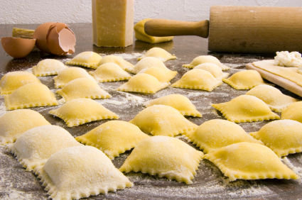

Step 3: Brush any semolina off the dough. Select a shape from the three options below. Fill and cut the ravioli according to the instructions; transfer to a large rimmed baking sheet lightly dusted with semolina. Repeat with the remaining pasta dough and filling.
